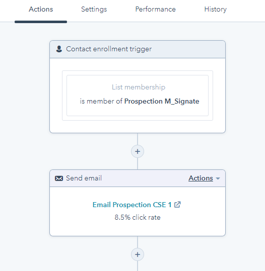

La crise de 2008 a poussé les grands producteurs de l’industrie de l’électronique à instaurer des quotas historiques pour garantir l’écoulement de leur production. Bien qu’au cours de la dernière décennie les marchés ont été régulièrement impactés, l’industrie de l’électronique est restée en croissance grâce au développement des voitures connectées, de la robotique et des IoT (Internet of Things objets connectés). La hausse des revenus disponibles dans les marchés émergents et l’accès croissant à internet à haut débit a permis le développement des appareils connectés. En effet, le nombre d’internautes dans le monde a augmenté de presque 10% par an en moyenne, porté principalement par la rapide augmentation de la connectivité dans la région Asie-Pacifique et, dans une moindre mesure, dans d’autres régions émergentes. Parallèlement, le taux de pénétration mondial d’Internet est passé de moins de 16% en 2005 à 51,2% en 2018. Cette situation profite aux entreprises de l’électronique grand public en quête d’augmentation des ventes des appareils intelligents. Selon une étude de JEITA la production mondiale de l’industrie de l’électronique et de l’informatique a augmenté de 1% en 2019 générant ainsi la somme de $2.921.9 millions.
Cependant la demande de composantes électroniques augmente plus rapidement que la capacité de production, il est alors devenu plus difficile de trouver certains composants à cause du problème de la rupture des stocks.
Après avoir enregistré une baisse de son exportation de composantes électroniques liée à son désaccord avec les Etats-Unis, la Chine (principal producteur de l’industrie de l’électronique) a de nouveau été affectée en janvier et en février par la pandémie du Covid-19. La crise du Covid 19 a progressivement attaqué l’ensemble de l’économie mondiale à partir du mois de mars 2020.
A ce jour, les mesures mises en place en raison du Covid 19 pèsent sur l’offre et la demande. À la différence de la dernière crise globale de 2008, la baisse de PIB en 2020 ne concerne pas que les économies avancées, mais aussi les économies émergentes (y compris la Chine).
Supplyframe est une entreprise privée à but lucratif qui a été fondée en 2003 par Steeve Flagg avec comme activité principale la régie commerciale dans l’industrie semi-conducteur. Depuis 2003 la société a levé un total de 15.5 millions de dollars d’investissements, réuni en quatre levées de fonds successives. La dernière levée de fond date de mai 2009 et a été dirigée par Clearstone Venture partners et US Venture Partners. Ces dernières années Supplyframe a fait l’acquisition de plusieurs entreprises afin d'asseoir sa position de leader mondial sur les solutions de Sourcing Intelligence sur le secteur de la fabrication de produits électroniques. Son acquisition la plus récente est Samacsys (finalisée le 28 août 2019). Supplyframe fournit un accès ouvert et connecté à la plus grande collection mondiale de moteurs de recherche verticaux, d’outils de supply chain et de communautés en ligne spécifiquement dédiés à l’industrie de l’électronique. La société développe des applications logicielles leader telles que Findchips Pro, Polydyne, Quotefx et Bom2buy et DSI (Design Sense Intelligence). A ce jour, elle a développé 28 produits et services.
Supplyframe regroupe 350 employés dans le monde répartis dans des bureaux à Los Angeles, Austin, Grenoble, Shangaï, Belgrade, Oxford, San Francisco, Shenzhen.
La société est divisée en 10 départements : Ingénierie, Ventes, Service Clients, Ventes E-commerces, Marketing, Finance et comptabilité, Croissance, Juridique, Informatique, Ressources Humaines. L’ensemble de l’entreprise est sous la direction du Président-directeur général Steeve Flagg et d’un conseil d’administration.
Direction de Supplyframe
Dans cette société de grande taille, il est aisé de percevoir l’interaction constante entre les différents services décrits plus haut. Bien que les décisions stratégiques soient prises par le PDG de l’entreprise Mr Steve Flagg en accord avec le Conseil d’Administration, l’ensemble de la direction partage la responsabilité de sa mise en œuvre.
J’ai effectué mon stage au service marketing sous la supervision du service Croissance dirigé par mon tuteur de stage Mr Alexandre Peron.
Au sein de l’entreprise Supplyframe le service Marketing fonctionne comme une agence externe et a pour mission de recueillir les besoins de l’ensemble des services de l’entreprise afin de pouvoir les prioriser en fonction des objectifs de l’entreprise. La priorisation des missions du service marketing est définie sous la supervision du Directeur Marketing Mr Richard Barnett.
Afin d’éviter de congestionner le service et d’intégrer au mix marketing uniquement des initiatives, techniques et campagnes à l’efficacité prouvée, l’entreprise a mis en place une phase d’expérimentation obligatoire pour tous les nouveaux projets entrants.
Le processus de l’expérimentation comporte trois phases : la définition de l’objectif, la mise en place du projet et le contrôle du résultat avec un nombre de cibles minimum à atteindre. A titre d’exemple, pour être considérée comme réussie, une expérimentation un projet doit s’effectuer dans un cadre statistiquement significatif. Dans le cadre de campagnes de prospection ou de marketing, la taille de l'échantillon est calculée à partir du TAV (Total Adressable Volume) et se fixe autour de 13 %. Dans la politique d’entreprise de Supplyframe. Aucune initiative ou campagne marketing n’entre dans la cadence du service marketing sans avoir réussi la phase d’expérimentation du service Croissance. Avant chaque phase d'expérimentation les OKR (Objectives and Key Results) sont définis, au même titre que les KPI (Key Performance Indicators) et l'évaluation finale s’effectue sur la base de ces critères de performance. Placé au cœur de l’activité de l’entreprise, le service marketing a une interaction constante et multi fonctionnelle avec l’ensemble des services de l’entreprise.
Au cours de ce stage, j’ai eu l’opportunité de découvrir le métier de commercial sous toutes ses formes et de comprendre de manière globale les difficultés que les employés du service Marketing pouvaient rencontrer dans l’exercice de prospection. Pour une meilleure compréhension des tâches que j’ai pu effectuer, il apparaît approprié de traiter en premier lieu des outils qui étaient mis à ma disposition, puis de traiter de manière détaillée les tâches que j’ai pu effectuer.
Durant ce stage j’ai passé la majorité de mon temps à prospecter de nouveaux producteurs de composantes électroniques. J’ai énormément appris à mesure que j’évoluais dans les missions qui m’ont été attribuées. Ce n’est qu’à partir de plusieurs semaines de stage que j’ai été véritablement opérationnelle, du fait de ma meilleure connaissance de la société et de la meilleure maîtrise des outils mis à ma disposition. L’un des grands avantages d’évoluer dans une entreprise telle que Supplyframe est la présence d’un service informatique de pointe capable de mettre à disposition des outils créés sur mesures afin d’optimiser le travail.
Le premier outil avec lequel je me suis familiarisée est Findchips. Il s’agit d’un outil de recherche de composants électroniques. Celui-ci a été le point de départ de ma mission de prospection.
Le deuxième outil qui a été mis à ma disposition est un scraper concu specifiquement pour cette mission par Igor Milisav, un ingenieur full stack base en Serbie. Cet outil developpe en python (langage de programmation qui peut s'utiliser dans de nombreux contextes et s'adapter à tout type d'utilisation) permet de rechercher sur LinkedIn les profils de personnes ciblées en fonction de multiples critères. Dans ce contexte précis: [nom de l’entreprise+localisation géographique+fonction dans l’entreprise+niveau d'ancienneté].
Le troisième outil qui a été mis à ma disposition est un second script en python exécutant de multiples techniques d’OSINT (Open Source Intelligence) à grande échelle. Ce logiciel permet de rassembler, de récupérer des renseignements de source ouverte et de générer des adresses mails en fonction des informations contenues dans le profil LinkedIn des cibles mentionnées ci-dessus. Ce logiciel fonctionne en deux étapes. Tout d’abord lorsqu’on lui soumet une liste de noms, il recherche les adresses e-mail associées sur 50 sites internet en s’appuyant sur les noms, prénoms et profils LinkedIn. A ce niveau de recherche la réussite est rare mais possible. Puis dans un deuxième temps, il recherche plusieurs adresses mail d’une même entreprise. Le but est de rechercher une structure similaire en testant toutes les formules d’adresse e-mail d’entreprises connues (exemple : nom.prénom structure similaire). Si une structure similaire est trouvée, le logiciel envoie un ping au serveur SMTP pour confirmer l’existence de l’adresse e-mail.
J’ai par la suite appris à utiliser le logiciel ZoomInfo. Il s’agit d’un service américain qui propose aux professionnels de la vente des abonnements d’accès à une base de données contenant des informations sur les entreprises et les hommes d’affaires.
Enfin j’ai été initié au logiciel Hubspot qui est une messagerie d’entreprise automatisée. Ce logiciel fonctionne en trois étapes. Il faut tout d’abord rédiger un e-mail type, puis importer un fichier comportant la liste des contacts, ainsi que les identifiants et codes personnalisés associés. Une fois ces deux étapes réalisées, chaque email est personnalisé avant l’envoi grâce à une recherche automatique dans ma liste de contacts.
Chaque pays, chaque entreprise ayant sa propre culture, il m’a fallu tout d’abord prendre le temps de me familiariser avec la structure, l’organisation, l’identité, la culture de la société Supplyframe. Au cours de ce stage, différentes sortes d’activités m’ont été confiées comme l’organisation de réunions en visioconférence avec les différents services, la réalisation d’une veille commerciale pour définir les 800 plus grands producteurs du marché de composantes électroniques, l’élaboration d’une base de données l’élaboration et la diffusions d’e-mails de prospection personnalisés et la réalisation de mon dossier de stage en format html. La mission la plus importante qui m’a été attribuée est la recherche et la prospection des 800 plus grands producteurs de composants électroniques.
Pour démarrer mon travail de prospection je me suis appuyée sur l’un des produits phares de l’entreprise Findchips afin de cibler dans sa base de données les noms des 800 plus grands fabricants de composantes électroniques en réalisant une veille commerciale.
Une fois ces entreprises ciblées, il m’a fallu réfléchir à un moyen de les contacter. J’ai alors commencé à rechercher les adresses mails des responsables des services marketing et commerciaux de chaque entreprise en utilisant le logiciel ZoomInfo.
J’ai alors été confrontée au côté chronophage de cette technique. Ma liste contenant plusieurs milliers de contacts, et mon stage ne durant que quelques semaines, je me suis alors tournée vers mon tuteur de stage pour rechercher un moyen de réduire mon temps de recherche.
Mr Peron m’a orienté vers Igor Milisav, en lui demandant de m’écrire un script en python capable de rechercher et importer les adresses des personnes ciblées.
Une fois le logiciel transféré sur mon ordinateur, j’ai pu y entrer ma liste de contacts recherchés et lancer une recherche automatique. J’ai ainsi pu compléter cette tâche de recherche en bénéficiant d’un net gain de temps.
Ma liste de contacts complète, je me suis retrouvée avec environ 2300 contacts J’ai été confrontée à une nouvelle difficulté : comment les contacter en gagnant du temps dans cette étape de prospection ? Ayant déjà commis l’erreur de choisir une méthode chronophage, je n’ai cette fois pas hésité à solliciter de l’aide.
J’ai alors organisé une réunion avec Mr Peron et Mr Barnett à laquelle nous avons aussi convié Mr Alex Macdougall de l’entreprise Samacsys afin définir le moyen, le support et le contenu de communication à utiliser pour finaliser cette opération de prospection. Nous avons alors à nouveau opté pour l’utilisation de la technologie. Pour nous démarquer des techniques de démarchage de la concurrence mais aussi pour gagner en attractivité, à l’issue de cette réunion nous avons décidé de créer un portail permettant aux personnes contactées de pouvoir accéder à un échantillon des données qu’ils auront l’opportunité d’acheter grâce à des codes d’accès personnalisés. Il a fallu une semaine pour générer l’ensemble des identifiants.
Durant cette période j’ai travaillé en collaboration avec Mr Peron et Mr Barnett dans la création de l’e-mail type. Qu’il s’agisse du choix des mots ou de la mise en page, rien n’a été laissé au hasard.
Après plusieurs jours d’attente, un fichier Excel contenant l’ensemble des adresses email et des identifiants m’a été transmis. Pour faciliter ce processus, j’ai créé un compte sur Hubspot. J’ai ensuite rédigé un e-mail type, puis j’ai importé le fichier Excel comportant la liste des contacts, ainsi que les identifiants et codes personnalisés associés. Par la suite, chaque email personnalisé a été automatiquement envoyé.
Chaque personne s’étant connectée au portail a été contactée la semaine suivante par un commercial.
Capture d'ecran de la sequence enrolement/prospection dans Hubspot
Au cours de mon stage, j’ai pu effectuer une tâche qui se situait à la périphérie de la prospection. Dès lors qu’elles m’ont permis d’apprendre différents aspects de la prospection grâce aux supports informatiques il paraissait approprié de s’y attarder. J’ai été initiée à différents langages de programmation: HTML, CSS, Js et Python. Cet apprentissage a été complété par la réalisation de mon dossier de stage en format html.
J’ai beaucoup appris de cette expérience professionnelle. J’ai découvert l’industrie de l’électronique dans une multinationale. Les apports du stage peuvent être regroupés autour de trois idées principales : les compétences acquises, les difficultés rencontrées, les solutions apportées ainsi que la vie en société.
J’ai appris à m’adapter et à évoluer dans un environnement interculturel en développant mes compétences en communication. De plus, Mr Peron m’a énormément appris en termes de pédagogie dans la communication avec ses collaborateurs. J’ai appris à entretenir un réseau de communication interculturel à distance. J’ai aussi développé ma capacité à réaliser une étude et une veille commerciale internationale. Ce stage m’a permis de développer les compétences nécessaires pour réaliser une opération de prospection de la conception à sa mise en œuvre. Enfin, j'ai développé mes compétences en informatique commerciale grâce à l'apprentissage de nouvelles techniques de recherches d’information, mais aussi à l’utilisation de logiciels bureautiques et d’outils de communication électroniques.
Ce stage en cette période de crise n’a pas été facile. Tout d’abord il m’a fallu du temps pour m’adapter à un mode de travail différent dans un domaine qui m’était totalement étranger. Évoluer à distance au sein d’un milieu multiculturel en me familiarisant avec un langage technique différent a été un réel challenge que j’ai pris plaisir à relever. Bien qu’il m’ait fallu du temps pour assimiler tous les termes liés au marché, j’ai peu à peu appris à penser de manière différente et à plus facilement me tourner vers la technologie pour optimiser mon travail. Dans ma démarche d’apprentissage, j’ai même été initiée au codage informatique.
Le télétravail a été difficile dans les premiers temps, car j’ai dû me familiariser avec la structure et le fonctionnement de l’entreprise et surtout dans le même temps gérer mon temps en autonomie. Au début de mon stage j’ai commis l’erreur de ne pas oser poser trop de questions de peur de trop solliciter mes collaborateurs. J’avais à cœur de faire preuve d’autonomie, ce qui m’a valu d’opter pour des solutions parfois chronophages.
Le gain de temps a été une difficulté récurrente dans ce stage de courte durée. Une difficulté qui s’est accentuée au fur et à mesure que les taches devenaient plus complexes.
J’ai été très chanceuse d’avoir un tuteur de stage aussi disponible et surtout d’évoluer dans une structure aussi accueillante où la communication est favorisée. L’ensemble des employés m’ont donné l’impression qu’il existe toujours une solution au sein de l’entreprise pour résoudre chaque problème. Cela a grandement facilité mon travail et mon évolution.
Mon stage chez Supplyframe a été très instructif. Au cours de ces deux mois, j’ai ainsi pu observer le fonctionnement d’une multinationale. Au -delà, de l’activité de chacun des services, j’ai pu apprendre comment s’articulent les différents départements d’une telle entreprise. Par ailleurs, les relations humaines entre les différents employés de la société, indépendamment de l’activité exercée par chacun d’eux, m’a appris sur le comportement à avoir en toute circonstance. J’ai énormément appris en observant le style de management de Mr Peron.
Comme il a été vu plus haut, 10 départements structurent la société Supplyframe. Aussi, au travers de l’analyse qui a pu être faite, il apparaît indéniable que l’ensemble de la direction influe dans les prises de décision. Pour autant, les prises de décisions stratégiques sont prises par le PDG de l’entreprise Steve Flagg en accord avec le conseil d’administration.
Aussi, très régulièrement des réunions sont organisées avec l’ensemble de la direction pour coordonner la stratégie de l’entreprise. Des notes internes sont diffusées à l’ensemble des services pour assurer la bonne marche de l’entreprise. De plus, un système de messagerie internet est utilisé pour permettre une meilleure circulation des informations. La circulation de l’information est ainsi un des points forts que j’ai retenu de cette société, tant au niveau du travail collaboratif, que dans l’implication de tous dans le bon fonctionnement de la société.
Au-delà du fonctionnement de l’entreprise, j’ai pu ressentir une réelle cohésion entre les différents services de la société. En effet, l’atmosphère au sein de la société est très conviviale. Cette ambiance détendue n’empêche pas les équipes de faire preuve d’une extrême rigueur dans leur travail. L’entreprise entretient la culture positive du résultat et accorde ainsi une grande autonomie à ses salariés. Une bonne communication réalisée par la direction suscite une vraie adhésion des employés au projet collectif, aux objectifs fixés par l’entreprise. J’ai ainsi constaté que la hiérarchie des fonctions de la société Supplyframe est très nettement marquée mais cependant la direction reste très ouverte et accessible. La communication entre les différents services est directe et informelle. Dans un objectif d'efficience, chaque employé reste disponible pour ses collaborateurs durant son travail via le tchat interne de l’entreprise ou par e-mail. Il est bien sûr de la responsabilité de chacun de ne pas solliciter les autres pour ne pas perturber leur productivité.
Durant ma période de stage j’ai pu solliciter Mr Peron et Mr Barnett à chaque fois que j’en ai eu besoin afin de trouver des solutions aux problématiques qui se présentaient à moi dans la poursuite des missions qui m’ont été données.
Au travers de cette convivialité, j’ai pu comprendre que l’activité d’une société est plus performante dans une atmosphère chaleureuse et bienveillante et communicante.
A titre de conclusion, il semble intéressant de mettre en évidence les questions actuelles qui se posent sur l’avenir de l’industrie du secteur de l’électronique, de savoir comment les acteurs économiques peuvent assurer la continuité de leur évolution malgré les problèmes récurrent de rupture des stocks mais surtout le déséquilibre créé par la crise économique liée au Covid. Au centre de cette question se trouve naturellement le problème de prospection. En effet, il devient urgent de trouver de nouvelles opportunités, de rechercher de nouveaux fournisseurs pour solutionner la problématique de la rupture des stocks de composantes. La crise du Covid19 a mis en exergue une extrême dépendance de l’industrie de l’électronique aux producteurs de composantes électroniques chinois. Une dépendance qui rend le marché vulnérable. Il y a une réelle nécessité de sécuriser les chaînes d’approvisionnements de l’industrie de l’électronique. Dans cette démarche de nombreux investissements dans des usines de production et des centres de stockage import et export ont été réalisés dans des pays tels que le l’Inde, le Mexique ou le Vietnam.
En effet, mon stage a été très bénéfique à cet égard : la recherche de nouvelles opportunités, de nouveaux producteurs pour apporter une offre stable aux agents économiques, l'industrie de l’électronique.
Il en résulte que bien que le marché de l’électronique soit mis sous tension avec la crise actuelle, il ne cesse de croître grâce notamment au développement de la robotique, des voitures électriques et des objets connectés (IoT : Internet of Things). D’après les projections des Nations Unies, la population mondiale devrait atteindre 8,6 milliards d’individus d’ici 2030. La croissance démographique qui sera observée dans les années à venir sera accompagnée par une urbanisation grandissante et entraînera une hausse de la demande des appareils électroniques grand public.
La société Supplyframe affiche chaque année une croissance régulière de par son offre de Sourcing Intelligence qui tend à offrir des solutions alternatives d’approvisionnement. En moyenne 4 millions d’ingénieurs en électronique utilisent chaque mois leurs services pour trouver, sourcer, importer des composantes électroniques pour leur travail. En proposant une offre plus élargie, la société devrait continuer à afficher une croissance positive dans les années à venir.